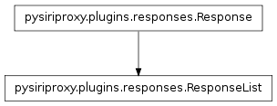
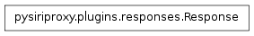

The responses module contains classes associated with waiting for specific types of responses from Siri.

The ResponseList class manages the logic for commanding Siri to ask the user for a specific response. Once one of the expected responses is received, the callback function will be notified with the response. If an unexpected response is received, this class handles the logic of commanding Siri to say something to indicate that this was not a valid response, and then this class continues to wait for a valid response. This class also provides the ability to limit the number of attempts so that it does not continue waiting for a valid response forever.
The callback function using the ResponseList will get notified with a value which will either be a string representing the user’s valid response, or it will be None indicating that the maximum number of attempts was reached prior to receiving a valid response.

The Response class encapsulates the logic of waiting for a response from the Siri user. It keeps track of the speech rule generator function that should be called with the response, and sends the response to that function once a response is received.
Call the callback function with the given response.